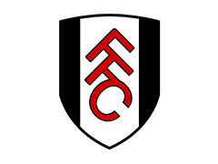

Игра в города
Топ 5 смешных случаев в моей жизни
- В 7 классе я сделал гачи-ремикс на трек своего знакомого.
- Однажды во время пожарной тревоги в общежитии я вышел в коридор и увидел, как один вьетнамец непринуждённо стрижёт другого.
- Я очень хотел познакомиться с девушкой, собрал всю свою решимость... а она оказалась замужем.
- В школе мой друг Влад напал на меня со спины, и я сломал об него дверцу стеклянного шкафа.
- Одним прекрасным летом я шёл вдоль дороги, и меня скрутили полицейские — они решили, что я наркоман.
Обзор фильма: Мементо
Мементо — психологический-детектив, сделавший Кристофера Нолана супер-звездой. Леонард ищет убийцу своей жены, но ему мешает амнезия.
Уникальность фильма заключается в необычном повествовании истории. Cцены в нём следуют в обратном хронологическом порядке, от конца к началу, c перерывами на флешбеки, чтобы показать зрителю восприятие мира человеком с антероградной амнезией.
Цитаты из книги Мартин Иден
- Жизнь, не стремящаяся к жизни, ищет путей к смерти.
- Любовь не может сбиться с пути, если только это настоящая любовь, а не хилый уродец, спотыкающийся и падающий на каждом шагу.
- Настоящий сильный человек должен быть выше жалости и сострадания. Эти чувства родились в подвалах и были лишь агонией и предсмертными судорогами слабых и несчастных.
- Любите красоту ради самой красоты

Расписание команды Фулхем
| Дата | Турнир | Соперник | Счет | Зрители | |
| 01.02.2025 | АПЛ | Ньюкасл | В гостях | 1 : 2 | 52173 |
| 15.02.2025 | АПЛ | Ноттингем Форест | Дома | превью | - |
| 22.02.2025 | АПЛ | Кристал Пэлас | Дома | превью | - |
| 25.02.2025 | АПЛ | Вулверхэмптон | В гостях | превью | - |
| 08.03.2025 | АПЛ | Брайтон | В гостях | превью | - |
| 16.03.2025 | АПЛ | Тоттенхэм | Дома | превью | - |